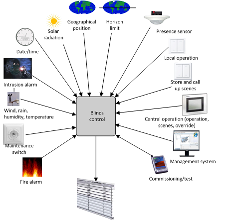
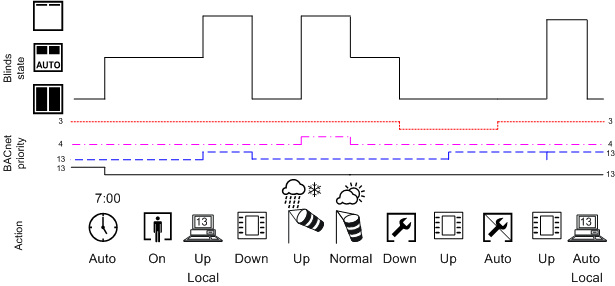

Shading Control
Control requires a variety of information on environmental influences and user interventions to meet requirements. The following illustration provides an overview of influences that may need to be considered to control blinds.

Positioning of blinds in the building, how the rooms are used, and assignment of rooms to organizational units determine what information acts on blinds control, for example:
- Wind speed monitoring acts on all blinds in the building or portions thereof.
- Automatic shading acts on all blinds on a facade or portions of the facade.
- A scheduler acts on all rooms for one renter.
- Local manual operation acts on all blinds in a rooms or individual blinds.
| Gray: Entire building |
Green/yellow: Rooms for a renter, for example, one floor. | |
Orange/Red: Local manual operation |

Operating
Circumstances by Outside Influences | |||
Symbol | Mode | BACnet- Execution Order | Description |
| Scheduler program | 13 | Schedulers normally write at the lowest priority and can be overridden locally. |
| Blinds switch | 7 | A blinds switch that cannot be overridden by the management platform must be programmed at priority 7 (for example, screening room). |
13 | Blinds switches that can be overridden locally. | ||
| Presence detector (occupied) | 13 | Presence detectors always report/switch at priority 13; depending on the type, it is switched either immediately or dependent on the illuminance. |
| Presence detector (not occupied) | 13 | Presence detector always reports/switches at priority 13. |
| Operating | 13 | Equal switching state as the local light switch. |
Extended operation | 8 | Overrides the local setting until the switching state is once again reset to auto. | |
Central functions | 13 | Equal switching state at priority 13 as on the management station. | |
8 | Equal switching state at priority 8 as on the management station. | ||
| 4 | Wind strength exceed the set limit value. | |
| 4 | Wind strength is once again normal. | |
| 3 | Servicing is being conducted. | |
| 3 | Service work is finished. | |
| Blinds Raised | Displays blinds as per present operating state. | |
| Auto mode | Displays blinds as per present operating state. | |
| Blinds closed. | Displays blinds as per present operating state. | |



Safety functions
A shading group can only be switched on and off if the present priority is higher than the present, pending priority. Switching is only possible once the normal state is restored; switching is not possible as long as the priority is lower due to a safety function.

NOTE:
Manual switching during an active safety function only takes effect once the safety function is eliminated.
BACnet Priorities for Shading
The following table illustrates the priorities used in Desigo.
BACnet Shading Priorities | ||
Execution Order | Description | Example |
1 | Emergency mode 1 | ‒ |
2 | Emergency mode 2 | Blinds can be raised during a fire alarm to permit evacuation through windows or access to emergency services personnel. |
3 | Emergency mode 3 | For service and cleaning purposes, the blinds are commanded to a specific position, so that personnel can undertake the required work without the risk of blinds being lowered. |
4 | Protection mode 1 | Collision protection prevents the blinds from being lowered if, for example, a door or window is open. |
5 | Protection mode 2 | Wind protection raises the blinds when the wind is too strong. |
6 | Minimum on/off | ‒ |
7 | Manual operating mode 1 | Overwrites all manual interventions and auto functions. |
8 | Manual operating mode 2 |
|
9 | Automatic mode 1 | ‒ |
10 | Automatic mode 2 | ‒ |
11 | Automatic mode 3 | Automatic shading position to prevent a room form overheating. |
12 | Automatic mode 4 | ‒ |
13 | Manual operating mode 3 |
|
14 | Automatic mode 5 | ‒ |
15 | Automatic mode 6 | Program automation |
16 | Automatic mode 7 | ‒ |
NOTE:
All commands executed locally in the room at priority 13 are rejected if a higher priority, for example, priority 8, is pending. The command is also not executed at a later time.